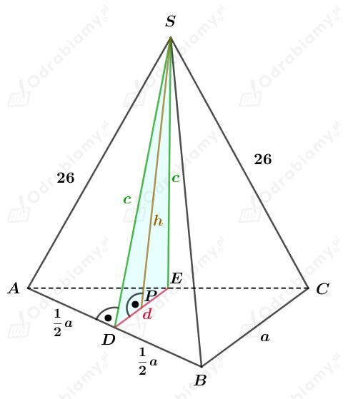
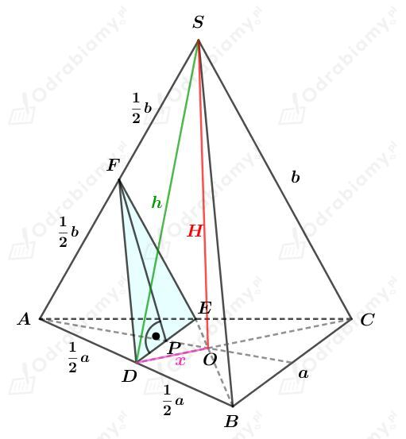
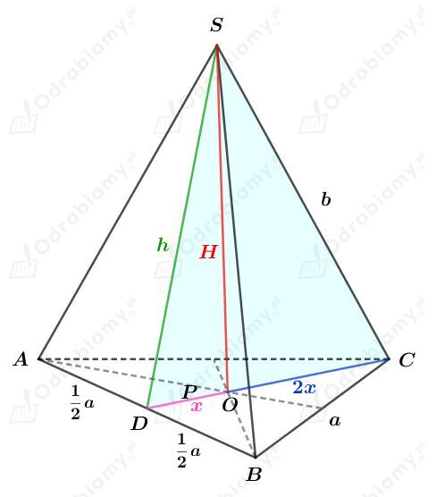
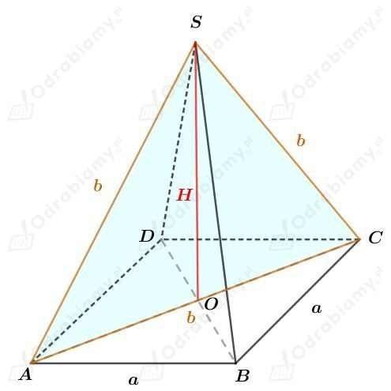
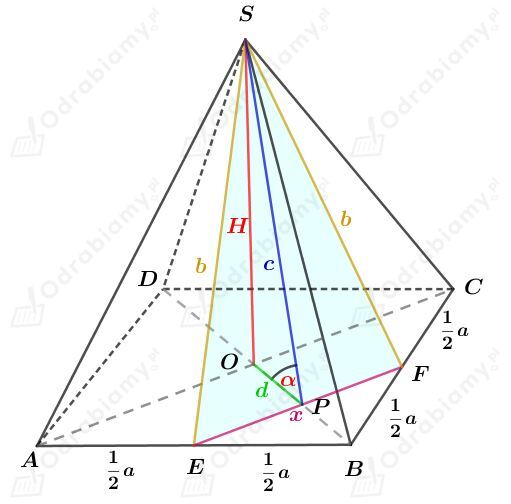
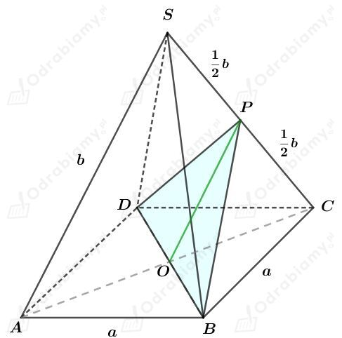
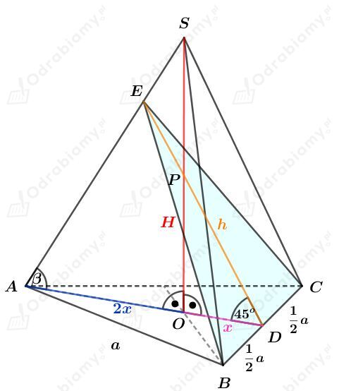
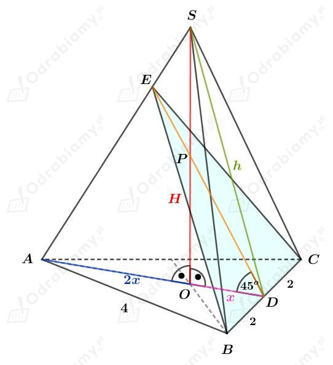

Rysunek:

Punkty D i E są środkami - odpowiednio - krawędzi AB i CA.
Z treści zadania wiemy, ze pole powierzchni podstawy wynosi 100√3 cm2. Korzystając ze wzoru na pole trójkąta równobocznego mamy:
Skoro odcinek DE łączy środki ramion trójkąta ABC, to:
Korzystając z twierdzenia Pitagorasa dla trójkąta ADS mamy:
Korzystając z twierdzenia Pitagorasa dla trójkąta DPS mamy:
Wyznaczmy pole trójkąta DES. Mamy:
Zauważmy, że
Zatem uzasadniliśmy, że pole trójkąta DES jest większe od 115 cm2.
Rysunek:

Punkty D, E, F są środkami - odpowiednio - krawędzi AB, CA i AS. Zatem
oraz
Wiemy, że pole trójkąta DEF jest równe S, zatem mamy:
Na mocy cechy bbb trójkąty DEF i ABS są podobne.
Z podobieństwa tych trójkątów mamy:
Odcinek x stanowi 1/3 długości wysokości trójkąta równobocznego ABC. Zatem
Korzystając z twierdzenia Pitagorasa dla trójkąta DOS mamy:
Obie strony równania są dodatnie, więc
Wyznaczmy objętość tego ostrosłupa. Mamy:
Rysunek:

Odcinek CD jest wysokością trójkąta równobocznego ABC. Korzystając ze wzoru na długość wysokości trójkąta równobocznego mamy:
oraz
Wyznaczmy pole trójkąta ABC. Korzystając ze wzoru na pole trójkąta równobocznego mamy:
Wiedząc, że objętość tego ostrosłupa wynosi √2/24a3 mamy:
Wyznaczmy pole otrzymanego przekroju. Mamy:
Korzystając z twierdzenia Pitagorasa dla trójkąta SOC mamy:
Korzystając z twierdzenia Pitagorasa dla trójkąta SDO mamy:
Zauważmy, że
Więc na mocy twierdzenia odwrotnego o twierdzenia Pitagorasa, trójkąt DCS jest trójkątem prostokątnym.
co kończy dowód.
Rysunek:

Trójkąt ACS jest trójkątem równobocznym, którego pole jest równe P. Korzystając ze wzoru na pole trójkąta równobocznego mamy:
Obie strony równania są dodatnie, więc:
Korzystając z twierdzenia Pitagorasa dla trójkąta AOS mamy:
Podstawiając otrzymane wcześniej b2 mamy:
Obie strony równania są dodatnie, więc:
Korzystając ze wzoru na długość przekątnej kwadratu mamy:
Wyznaczmy objętość tego ostrosłupa. Mamy:
Rysunek:

Korzystając ze wzoru na przekątną kwadratu wiemy, że
zatem
oraz
Wyznaczmy cosinus kąta 𝛼. Mamy:
Obliczmy pole otrzymanego przekroju. Mamy:
Obliczmy długość wysokości tego ostrosłupa. Wyznaczmy sinus kąta 𝛼. Mamy:
Obliczmy objętość tego ostrosłupa.
Rysunek:

Korzystając z wzoru na długość przekątnej kwadratu mamy:
Trójką DBP jest trójkątem równobocznym, więc:
Korzystając ze wzoru na długość wysokości trójkąta równobocznego mamy:
Możemy zauważyć, że odcinek OP jest środkową trójkąta prostokątnego SOC, zatem:
Wyznaczmy stosunek długości krawędzi bocznej do długości krawędzi podstawy. Mamy:
Rysunek:

Zauważmy, że
oraz
Trójkąt ODP jest trójkątem prostokątnym równoramiennym, zatem
Skoro punkt P jest środkiem wysokości tego ostrosłupa, to
Skoro |AO|=|OS|, to trójkąt AOS jest trójkątem prostokątnym równoramiennym, czyli 𝛽=45o, więc trójkąt ADE również jest trójkątem prostokątnym równoramiennym.
Rozważając trójkąt ADE i korzystając ze związku między długościami boków w trójkącie o katach 45o, 45o, 90o mamy:
Korzystając ze wzoru na długość wysokości w trójkącie równobocznym mamy:
Wiedząc, że pole trójkąta BCE wynosi 2√6 mamy:
Zatem wyznaczmy pole powierzchni podstawy tego ostrosłupa:
oraz długość jego wysokości
Wyznaczmy objętość tego ostrosłupa. Mamy:
Rysunek:

Korzystając ze wzoru na długość wysokości trójkąta równobocznego mamy:
więc
oraz
Skoro trójkąt ODP jest równoramienny i prostokątny, to
czyli skoro punkt P jest środkiem wysokości H, to
Korzystając z twierdzenia Pitagorasa dla trójkąta ODS mamy:
Wyznaczmy pole powierzchni podstawy tego ostrosłupa. Korzystając ze wzoru na pole trójkąta równobocznego mamy:
Wyznaczmy pole powierzchni bocznej tego ostrosłupa. Mamy:
Wyznaczmy pole powierzchni całkowitej tego ostrosłupa. Mamy: